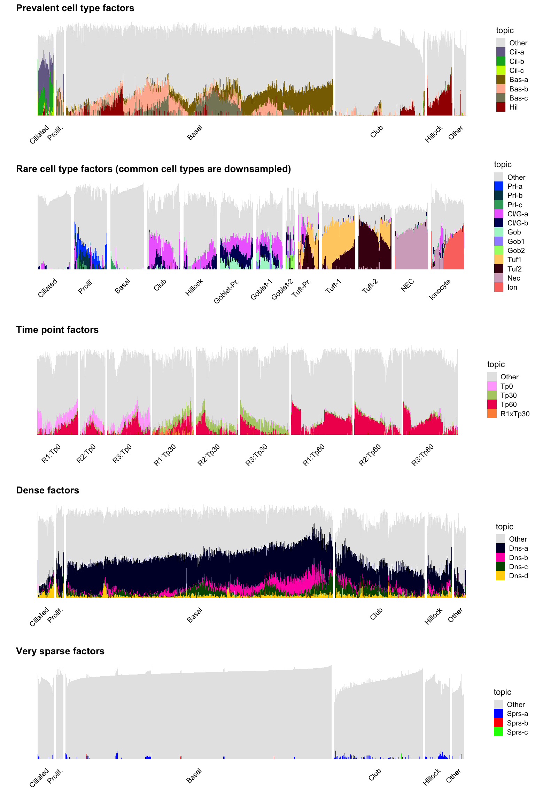

Montoro et al. structure plots
Jason Willwerscheid
2/2/2025
Last updated: 2025-02-05
Checks: 7 0
Knit directory: ebmf-for-scrnaseq-paper/
This reproducible R Markdown analysis was created with workflowr (version 1.7.1). The Checks tab describes the reproducibility checks that were applied when the results were created. The Past versions tab lists the development history.
Great! Since the R Markdown file has been committed to the Git repository, you know the exact version of the code that produced these results.
Great job! The global environment was empty. Objects defined in the global environment can affect the analysis in your R Markdown file in unknown ways. For reproduciblity it’s best to always run the code in an empty environment.
The command set.seed(20220420) was run prior to running
the code in the R Markdown file. Setting a seed ensures that any results
that rely on randomness, e.g. subsampling or permutations, are
reproducible.
Great job! Recording the operating system, R version, and package versions is critical for reproducibility.
Nice! There were no cached chunks for this analysis, so you can be confident that you successfully produced the results during this run.
Great job! Using relative paths to the files within your workflowr project makes it easier to run your code on other machines.
Great! You are using Git for version control. Tracking code development and connecting the code version to the results is critical for reproducibility.
The results in this page were generated with repository version 87d10f4. See the Past versions tab to see a history of the changes made to the R Markdown and HTML files.
Note that you need to be careful to ensure that all relevant files for
the analysis have been committed to Git prior to generating the results
(you can use wflow_publish or
wflow_git_commit). workflowr only checks the R Markdown
file, but you know if there are other scripts or data files that it
depends on. Below is the status of the Git repository when the results
were generated:
Ignored files:
Ignored: .DS_Store
Ignored: .Rhistory
Ignored: .Rproj.user/
Ignored: data/.DS_Store
Ignored: data/montoro-mean-expr.rds
Ignored: data/montoro.rds
Ignored: data/pijuan-sala-mean-expr.rds
Ignored: data/pijuan-sala.rds
Ignored: figs/
Ignored: output/montoro-ebmf.rds
Ignored: output/montoro-ebnmf-gsea.rds
Ignored: output/montoro-nmf-gsea.rds
Ignored: output/montoro-nmf.rds
Ignored: output/montoro-tm-gsea.rds
Ignored: output/montoro-topics.rds
Ignored: output/ps-ebmf-20.rds
Ignored: output/ps-ebmf-30.rds
Ignored: output/ps-ebmf-40.rds
Ignored: output/ps-nmf.rds
Ignored: output/ps-topics-20.rds
Ignored: output/ps-topics-30.rds
Ignored: output/ps-topics-40.rds
Untracked files:
Untracked: code/montoro_gsea.R
Untracked: code/montoro_gseasusie2.R
Untracked: output/ebnmf_annotations.html
Unstaged changes:
Deleted: analysis/montoro_structure.html
Modified: analysis/montoro_structure.qmd
Deleted: analysis/montoro_structure_files/figure-html/unnamed-chunk-10-1.png
Deleted: analysis/montoro_structure_files/figure-html/unnamed-chunk-11-1.png
Deleted: analysis/montoro_structure_files/figure-html/unnamed-chunk-11-2.png
Deleted: analysis/montoro_structure_files/figure-html/unnamed-chunk-11-3.png
Deleted: analysis/montoro_structure_files/figure-html/unnamed-chunk-12-1.png
Deleted: analysis/montoro_structure_files/figure-html/unnamed-chunk-12-2.png
Deleted: analysis/montoro_structure_files/figure-html/unnamed-chunk-12-3.png
Deleted: analysis/montoro_structure_files/figure-html/unnamed-chunk-5-1.png
Deleted: analysis/montoro_structure_files/figure-html/unnamed-chunk-6-1.png
Deleted: analysis/montoro_structure_files/figure-html/unnamed-chunk-7-1.png
Deleted: analysis/montoro_structure_files/figure-html/unnamed-chunk-8-1.png
Deleted: analysis/montoro_structure_files/figure-html/unnamed-chunk-9-1.png
Deleted: analysis/montoro_structure_files/libs/bootstrap/bootstrap-icons.css
Deleted: analysis/montoro_structure_files/libs/bootstrap/bootstrap-icons.woff
Deleted: analysis/montoro_structure_files/libs/bootstrap/bootstrap.min.css
Deleted: analysis/montoro_structure_files/libs/bootstrap/bootstrap.min.js
Deleted: analysis/montoro_structure_files/libs/clipboard/clipboard.min.js
Deleted: analysis/montoro_structure_files/libs/quarto-html/anchor.min.js
Deleted: analysis/montoro_structure_files/libs/quarto-html/popper.min.js
Deleted: analysis/montoro_structure_files/libs/quarto-html/quarto-syntax-highlighting.css
Deleted: analysis/montoro_structure_files/libs/quarto-html/quarto.js
Deleted: analysis/montoro_structure_files/libs/quarto-html/tippy.css
Deleted: analysis/montoro_structure_files/libs/quarto-html/tippy.umd.min.js
Note that any generated files, e.g. HTML, png, CSS, etc., are not included in this status report because it is ok for generated content to have uncommitted changes.
These are the previous versions of the repository in which changes were
made to the R Markdown (analysis/montoro_structure.Rmd) and
HTML (docs/montoro_structure.html) files. If you’ve
configured a remote Git repository (see ?wflow_git_remote),
click on the hyperlinks in the table below to view the files as they
were in that past version.
| File | Version | Author | Date | Message |
|---|---|---|---|---|
| Rmd | 87d10f4 | Jason Willwerscheid | 2025-02-05 | wflow_publish("analysis/montoro_structure.Rmd") |
| html | 5b16128 | Jason Willwerscheid | 2025-02-02 | Build site. |
| Rmd | 61633b1 | Jason Willwerscheid | 2025-02-02 | workflowr::wflow_publish("analysis/montoro_structure.Rmd") |
Introduction
Here I produce structure plots for EBNMF, NMF, and topic model fits to the larger dataset from Montoro et al.
Load the Tidyverse:
library(tidyverse)
library(cowplot)
library(gt)Load the flashier results:
scale_FF <- function(FF, LL, D = 1) {
LL_norms <- apply(LL, 2, function(x) sqrt(sum(x^2)))
return(t(t(FF) * D * LL_norms))
}
ebnmf <- readRDS("output/montoro-ebmf.rds")
ebnmf_FF <- scale_FF(ebnmf$fit$F.pm, ebnmf$fit$L.pm)Extract cell covariates:
cell_types <- c(
"Ciliated",
"Proliferating",
"Basal",
"Club",
"Club (hillock-associated)",
"Goblet.progenitor",
"Goblet.1",
"Goblet.2",
"Tuft.progenitor",
"Tuft.1",
"Tuft.2",
"Neuroendocrine",
"Ionocyte"
)
ct_abbr <- cell_types
ct_abbr <- str_replace(ct_abbr, "\\.", "\\-")
ct_abbr[2] <- "Prolif."
ct_abbr[5] <- "Hillock"
ct_abbr[12] <- "NEC"
ct_abbr <- str_replace(ct_abbr, "progenitor", "Pr.")
external_info <- tibble(
CellType = sapply(strsplit(rownames(ebnmf_FF), "_"), `[[`, 5),
TimePoint = sapply(strsplit(rownames(ebnmf_FF), "_"), `[[`, 2),
Replicate = sapply(strsplit(rownames(ebnmf_FF), "_"), `[[`, 3)
) |>
left_join(tibble(CellType = cell_types, CtAbbr = ct_abbr), by = "CellType") |>
mutate(
CellType = factor(CellType, levels = cell_types),
CtAbbr = factor(CtAbbr, levels = ct_abbr),
TimePoint = factor(TimePoint),
Replicate = factor(Replicate),
) |>
mutate(
TPxRep = fct_cross(Replicate, TimePoint),
CommonType = fct_collapse(CtAbbr, Other = ct_abbr[6:13])
)I will use the following functions to generate plots:
make_tib <- function(FF, info_col, ksort, ncells = 50, duprate = 1) {
info <- external_info[[info_col]]
# Downsample the number of cells.
set.seed(666)
cell_idx <- numeric(0)
for (k in levels(info)) {
which_idx <- which(info == k)
# Downsample common cell types. Duplicate rare ones.
if (ncells < length(which_idx)) {
which_idx <- sample(which_idx, ncells, replace = FALSE)
} else if (ncells >= length(which_idx) * duprate) {
which_idx <- rep(which_idx, duprate)
}
cell_idx <- c(cell_idx, which_idx)
}
FF <- FF[cell_idx, ]
info <- info[cell_idx]
colnames(FF) <- 1:ncol(FF)
lvls <- as.numeric(ksort)
if (any(setdiff(1:ncol(FF), ksort))) {
lvls <- c("Other", lvls)
}
tib <- as_tibble(FF) |>
mutate(
CellIdx = row_number(),
Info = info
) |>
pivot_longer(
-c(CellIdx, Info),
names_to = "Component",
values_to = "Loading",
values_drop_na = TRUE
) |>
mutate(
Component = ifelse(as.numeric(Component) %in% ksort, Component, "Other")
) |>
group_by(CellIdx, Info, Component) |>
summarize(Loading = sum(Loading), .groups = "drop") |>
mutate(
Component = factor(Component, levels = lvls)
) |>
arrange(Info, Component)
levels(tib$Component) <- c("Other", names(ksort))
return(tib)
}
do_plot <- function(tib, colors, ptitle, ntiles = 400) {
struct_df <- tib |>
pivot_wider(names_from = Component, values_from = Loading)
Lmat <- struct_df |>
select(-(1:2)) |>
as.matrix()
group <- struct_df$Info
if ("Other" %in% tib$Component) {
colors <- c("grey90", colors)
}
p <- fastTopics::structure_plot(
Lmat, topics = colnames(Lmat),
grouping = group,
colors = colors,
# embed_method = fastTopics::umap_from_topics,
# dims = 1,
gap = 10,
verbose = FALSE
) + theme(
axis.text.y = element_blank()
) + labs(
y = "",
title = ptitle
)
return(p)
}
glasbey <- function(k) {
return(fastTopics:::glasbey()[k])
}The following function is used to generate tables of gene set annotations:
make_tbl <- function(GSEA, ksort) {
klabs <- tibble(
korig = sort(ksort),
ksort = ksort,
label = factor(names(ksort), levels = names(ksort))
)
keep_res <- GSEA |>
# Remove "identical" gene sets (userId lists genes found in set)
left_join(klabs, by = c("k" = "ksort")) |>
group_by(k, userId) |>
arrange(FDR) |>
slice_head(n = 1) |>
group_by(k) |>
slice_min(FDR, n = 5) |>
filter(FDR < 0.05 | rank(FDR) == min(rank(FDR))) |>
ungroup()
shared_genesets <- keep_res |>
group_by(geneSet) |>
filter(n() > 1) |>
ungroup()
distinctive_genesets <- keep_res |>
anti_join(shared_genesets)
shared_genesets <- shared_genesets |>
group_by(geneSet, description) |>
arrange(label) |>
summarize(components = paste0(label, collapse = ", "),
FDR = ifelse(
n() < 4,
paste(ifelse(FDR < .01, "<.01", round(FDR, 2)), collapse = ", "),
paste("all <", round(max(FDR) + 0.005001, 2))
),
order1 = label[1], order2 = label[2],
.groups = "drop") |>
arrange(order1, order2) |>
select(-order1, -order2)
distinctive_genesets <- distinctive_genesets |>
group_by(geneSet, description) |>
summarize(components = paste0(label, collapse = ", "),
order2 = FDR[1],
FDR = paste(ifelse(FDR < .01, "<.01", round(FDR, 2)), collapse = ", "),
order1 = label[1],
.groups = "drop") |>
arrange(order1, order2) |>
select(-order1, -order2)
genesets <- shared_genesets |>
bind_rows(distinctive_genesets) |>
group_by(components)
gt_tbl <- gt(genesets) |>
#cols_move_to_start(columns = components) |>
cols_label(
geneSet = "Gene Set",
description = "Description",
components = "Components"
) |>
tab_style(
style = cell_text(weight = "bold"),
locations = cells_row_groups()
) |>
tab_options(
table.font.size = 11
)
return(gt_tbl)
}EBNMF
In each case I manually sort and label factors.
ebnmf_ksort <- c(
26, 27, 30, # Sparse
1, 8, 10, 16, # Dense
11, 12, 2, 24, # Time points
6, 13, 22, # Ciliated
21, 23, 17, # Proliferating
4, 5, 9, # Basal
3, 15, 7, # 26, Club-Hillock
25, 28, 29, # Goblet
18, 19, 14, 20 # Tuft-NEC-Ionocyte
)
names(ebnmf_ksort) <- c(
"Sprs-a", "Sprs-b", "Sprs-c",
"Dns-a", "Dns-b", "Dns-c", "Dns-d",
"Tp0", "Tp30", "Tp60", "R1xTp30",
"Cil-a", "Cil-b", "Cil-c",
"Prl-a", "Prl-b", "Prl-c",
"Bas-a", "Bas-b", "Bas-c",
"Cl/G-a", "Cl/G-b", "Hil",
"Gob", "Gob1", "Gob2",
"Tuf1", "Tuf2", "Nec", "Ion"
)
sparse_title <- "Very sparse factors"
dense_title <- "Dense factors"
tp_title <- "Time point factors"
common_title <- "Prevalent cell type factors"
rare_title <- "Rare cell type factors (common cell types are downsampled)"
sparse_k <- 1:3
ebnmf_tib <- make_tib(ebnmf_FF, "CommonType", ebnmf_ksort[sparse_k], Inf, 1)
sparse_p <- do_plot(ebnmf_tib, glasbey(2:4), sparse_title)
dense_k <- 4:7
ebnmf_tib <- make_tib(ebnmf_FF, "CommonType", ebnmf_ksort[dense_k], Inf, 1)
dense_p <- do_plot(ebnmf_tib, glasbey(5:8), dense_title)
tp_k <- 8:11
ebnmf_tib <- make_tib(ebnmf_FF, "TPxRep", ebnmf_ksort[tp_k], Inf, 1)
tp_p <- do_plot(ebnmf_tib, glasbey(14:17), tp_title)
common_k <- c(12:14, 18:20, 23)
ebnmf_tib <- make_tib(ebnmf_FF, "CommonType", ebnmf_ksort[common_k], Inf, 1)
common_p <- do_plot(ebnmf_tib, glasbey(21:27), common_title)
rare_k <- c(15:17, 21:22, 24:30)
ebnmf_tib <- make_tib(ebnmf_FF, "CtAbbr", ebnmf_ksort[rare_k], 100, 3)
rare_p <- do_plot(ebnmf_tib, glasbey(32:43), rare_title)
plot_grid(common_p, rare_p, tp_p, dense_p, sparse_p, nrow = 5, ncol = 1)
| Version | Author | Date |
|---|---|---|
| 5b16128 | Jason Willwerscheid | 2025-02-02 |
NMF
nnlm <- readRDS("output/montoro-nmf.rds")
nnlm_FF <- scale_FF(t(nnlm$fit$h), nnlm$fit$w, nnlm$fit$d)
nnlm_ksort <- c(
1, 28, 10, 26, # dense
9, 5, # time points (dense)
3, 11, 8, 7, # time points
21, # replicate x TP
15, 22, 20, # ciliated
24, 12, 19, # prolif
2, 6, 4, 14, 13, # basal
25, 17, 23, # club/goblet
18, 16, # hillock
29, # tuft
27, # NEC
30 # ionocyte
)
names(nnlm_ksort) <- c(
"Dns-a", "Dns-b", "Dns-c", "Dns-d",
"TpxCl", "Tp30/60",
"Tp0-a", "Tp0-b", "Tp30", "Tp60",
"R1xTp30",
"Cil-a", "Cil-b", "Cil-c",
"Prl-a", "Prl-b", "Prl-c",
"Bas-a", "Bas-b", "Bas-c", "Bas-d", "Bas-e",
"Cl/G-a", "Cl/G-b", "Cl/G-c",
"Hil-a", "Hil-b",
"Tuf",
"Nec",
"Ion/Cl/G"
)
nnlm_dense_k <- 1:4
nnlm_tib <- make_tib(nnlm_FF, "CommonType", nnlm_ksort[nnlm_dense_k], Inf, 1)
nnlm_dense_p <- do_plot(nnlm_tib, glasbey(5:8), dense_title)
nnlm_tp_k <- 5:11
nnlm_tib <- make_tib(nnlm_FF, "TPxRep", nnlm_ksort[nnlm_tp_k], Inf, 1)
nnlm_tp_p <- do_plot(nnlm_tib, glasbey(11:17), tp_title)
nnlm_common_k <- c(12:14, 18:22, 26:27)
nnlm_tib <- make_tib(nnlm_FF, "CommonType", nnlm_ksort[nnlm_common_k], Inf, 1)
nnlm_common_p <- do_plot(nnlm_tib, glasbey(21:30), common_title)
nnlm_rare_k <- c(15:17, 23:25, 28:30)
nnlm_tib <- make_tib(nnlm_FF, "CtAbbr", nnlm_ksort[nnlm_rare_k], 100, 3)
nnlm_rare_p <- do_plot(nnlm_tib, glasbey(32:40), rare_title)
plot_grid(nnlm_common_p, nnlm_rare_p, nnlm_tp_p, nnlm_dense_p, nrow = 4, ncol = 1)
| Version | Author | Date |
|---|---|---|
| 5b16128 | Jason Willwerscheid | 2025-02-02 |
Topic model
tm <- readRDS("output/montoro-topics.rds")
tm_fit <- tm$fit
tm_fit$F <- tm$fit$L
tm_fit$L <- tm$fit$F
tm_fit$Fn <- tm$fit$Ln
tm_fit$Ln <- tm$fit$Fn
tm_fit$Fy <- tm$fit$Ly
tm_fit$Ly <- tm$fit$Fy
tm_fit <- fastTopics::poisson2multinom(tm_fit)
tm_FF <- tm_fit$L
tm_ksort <- c(
21, 5, 11, 17, 27, # Dense
19, # Tp30/60xCl
15, 8, # Tp0/60?
24, # Tp30/60
14, 26, # Tp0
23, 29, 9, # Tp30 - 23 also club
13, # Tp60
25, # Ciliated
6, # Proliferating
10, 4, # Basal/Prolif
12, # Basal
3, # Club/Goblet
18, # Club/Hillock
22, # Club
16, 28, # Hillock/Goblet-progenitor
20, # Hillock
7, # Goblet-p/1
2, # Goblet-2
1, 30 # Tuft-NEC-Ion
)
names(tm_ksort) <- c(
"Dns-a", "Dns-b", "Dns-c",
"Dns-d", "Dns-e",
"TpxCl",
"Tp0/60-a", "Tp0/60-b",
"Tp30/60",
"Tp0-a", "Tp0-b",
"Tp30xCl", "Tp30-a", "Tp30-b",
"Tp60",
"Cil",
"Prl",
"B/P-a", "B/P-b",
"Bas",
"Cl/G", "Cl/Hil", "Club",
"H/G-a", "H/G-b",
"Hil",
"Gob1", "Gob2",
"TNI-a", "TNI-b"
)
tm_dense_k <- 1:5
tm_tib <- make_tib(tm_FF, "CommonType", tm_ksort[tm_dense_k], Inf, 1)
tm_dense_p <- do_plot(tm_tib, glasbey(5:9), dense_title)
tm_tp_k <- 6:15
tm_tib <- make_tib(tm_FF, "TPxRep", tm_ksort[tm_tp_k], Inf, 1)
tm_tp_p <- do_plot(tm_tib, glasbey(11:20), tp_title)
tm_common_k <- c(16, 20, 22:23, 26)
tm_tib <- make_tib(tm_FF, "CommonType", tm_ksort[tm_common_k], Inf, 1)
tm_common_p <- do_plot(tm_tib, glasbey(24:29), common_title)
tm_rare_k <- c(17:19, 21, 24:25, 27:30)
tm_tib <- make_tib(tm_FF, "CtAbbr", tm_ksort[tm_rare_k], 100, 3)
tm_rare_p <- do_plot(tm_tib, glasbey(32:41), rare_title)
plot_grid(tm_common_p, tm_rare_p, tm_tp_p, tm_dense_p, nrow = 4, ncol = 1)
EBNMF annotations
I use GSEA to do annotations. For each component, I provide as input all genes with loadings that are larger than 0.01 times the maximum loading (for the topic model, 0.001 times the maximum loading). (If all loadings are provided, GSEA will also find gene sets with very small loadings across genes, which is obviously not what we want.) I report the top 5 gene sets with FDR < 0.05 for each component (ties are included), with the restriction that at least one gene set is reported for each factor (even if its FDR is greater than 0.05).
ebnmf_GSEA <- readRDS("output/montoro-ebnmf-gsea.rds")
make_tbl(ebnmf_GSEA, ebnmf_ksort[c(12:30, 8:11, 4:7, 1:3)])| Gene Set | Description | FDR |
|---|---|---|
| Prl-a, Prl-b | ||
| GO:0007368 | determination of left/right symmetry | 0.01, <.01 |
| Prl-a, Bas-a, Tp30 | ||
| GO:0035869 | ciliary transition zone | <.01, 0.02, <.01 |
| Bas-a, Tp30 | ||
| GO:0097731 | 9+0 non-motile cilium | 0.02, <.01 |
| Bas-a, Dns-c | ||
| GO:0030990 | intraciliary transport particle | 0.02, <.01 |
| Bas-b, Tp30 | ||
| GO:0097730 | non-motile cilium | 0.03, <.01 |
| Tuf1, Tuf2, Nec, Tp0, R1xTp30, Sprs-a | ||
| GO:0003735 | structural constituent of ribosome | all < 0.02 |
| Tuf1, Tuf2, Nec, R1xTp30, Dns-a | ||
| GO:0005840 | ribosome | all < 0.01 |
| Tuf1, Tuf2, Nec, Tp0, R1xTp30 | ||
| GO:0022627 | cytosolic small ribosomal subunit | all < 0.01 |
| Tuf1, Tuf2, Nec, Sprs-a | ||
| GO:0044445 | cytosolic part | all < 0.01 |
| Tuf1, Tp0 | ||
| GO:0044391 | ribosomal subunit | <.01, 0.01 |
| Tuf2, Nec | ||
| GO:0022625 | cytosolic large ribosomal subunit | <.01, <.01 |
| Cil-a | ||
| GO:0030534 | adult behavior | <.01 |
| GO:0060048 | cardiac muscle contraction | 0.04 |
| GO:0055117 | regulation of cardiac muscle contraction | 0.05 |
| GO:0009408 | response to heat | 0.05 |
| Cil-b | ||
| GO:0007569 | cell aging | <.01 |
| Cil-c | ||
| GO:0006090 | pyruvate metabolic process | <.01 |
| GO:0010712 | regulation of collagen metabolic process | <.01 |
| GO:0016614 | oxidoreductase activity, acting on CH-OH group of donors | <.01 |
| GO:0032922 | circadian regulation of gene expression | <.01 |
| GO:0032963 | collagen metabolic process | <.01 |
| GO:0032964 | collagen biosynthetic process | <.01 |
| GO:0046620 | regulation of organ growth | <.01 |
| GO:0060420 | regulation of heart growth | <.01 |
| Prl-a | ||
| GO:0030879 | mammary gland development | <.01 |
| GO:0050954 | sensory perception of mechanical stimulus | <.01 |
| GO:0004930 | G protein-coupled receptor activity | <.01 |
| Prl-b | ||
| GO:0009799 | specification of symmetry | <.01 |
| GO:0042393 | histone binding | <.01 |
| GO:0005930 | axoneme | 0.02 |
| Prl-c | ||
| GO:0005882 | intermediate filament | <.01 |
| Bas-a | ||
| GO:0016573 | histone acetylation | 0.02 |
| GO:0045844 | positive regulation of striated muscle tissue development | 0.03 |
| Bas-b | ||
| GO:0008237 | metallopeptidase activity | <.01 |
| Bas-c | ||
| GO:0032391 | photoreceptor connecting cilium | <.01 |
| Cl/G-a | ||
| GO:0046578 | regulation of Ras protein signal transduction | <.01 |
| Cl/G-b | ||
| GO:0006140 | regulation of nucleotide metabolic process | 0.05 |
| Hil | ||
| GO:0042752 | regulation of circadian rhythm | <.01 |
| GO:0019730 | antimicrobial humoral response | 0.02 |
| GO:0045111 | intermediate filament cytoskeleton | 0.02 |
| Gob | ||
| GO:0090407 | organophosphate biosynthetic process | <.01 |
| Gob1 | ||
| GO:0033674 | positive regulation of kinase activity | 0.05 |
| Gob2 | ||
| GO:0006996 | organelle organization | 0.14 |
| Tuf1 | ||
| GO:0098798 | mitochondrial protein complex | <.01 |
| GO:0098800 | inner mitochondrial membrane protein complex | <.01 |
| Tuf2 | ||
| GO:0005198 | structural molecule activity | <.01 |
| Nec | ||
| GO:0005088 | Ras guanyl-nucleotide exchange factor activity | <.01 |
| Ion | ||
| GO:0015078 | proton transmembrane transporter activity | <.01 |
| GO:0009055 | electron transfer activity | <.01 |
| GO:1902600 | proton transmembrane transport | <.01 |
| GO:0016469 | proton-transporting two-sector ATPase complex | <.01 |
| GO:0036442 | proton-exporting ATPase activity | <.01 |
| Tp0 | ||
| GO:0060021 | roof of mouth development | <.01 |
| GO:0042274 | ribosomal small subunit biogenesis | 0.02 |
| Tp30 | ||
| GO:0008234 | cysteine-type peptidase activity | <.01 |
| GO:0051606 | detection of stimulus | <.01 |
| Tp60 | ||
| GO:0043618 | regulation of transcription from RNA polymerase II promoter in response to stress | 0.03 |
| R1xTp30 | ||
| GO:0002821 | positive regulation of adaptive immune response | <.01 |
| GO:0005791 | rough endoplasmic reticulum | 0.01 |
| Dns-a | ||
| GO:0001655 | urogenital system development | <.01 |
| GO:0001822 | kidney development | <.01 |
| GO:0007162 | negative regulation of cell adhesion | <.01 |
| GO:0022626 | cytosolic ribosome | <.01 |
| GO:0043604 | amide biosynthetic process | <.01 |
| GO:0072001 | renal system development | <.01 |
| GO:1990904 | ribonucleoprotein complex | <.01 |
| Dns-b | ||
| GO:0031072 | heat shock protein binding | <.01 |
| GO:0034470 | ncRNA processing | <.01 |
| GO:0007018 | microtubule-based movement | <.01 |
| GO:0034605 | cellular response to heat | 0.02 |
| GO:0006606 | protein import into nucleus | 0.02 |
| Dns-c | ||
| GO:0004364 | glutathione transferase activity | <.01 |
| GO:0060828 | regulation of canonical Wnt signaling pathway | <.01 |
| GO:0072341 | modified amino acid binding | <.01 |
| GO:0071466 | cellular response to xenobiotic stimulus | 0.01 |
| Dns-d | ||
| GO:0008509 | anion transmembrane transporter activity | 0.21 |
| Sprs-a | ||
| GO:0034660 | ncRNA metabolic process | <.01 |
| GO:0016072 | rRNA metabolic process | 0.02 |
| GO:0015934 | large ribosomal subunit | 0.04 |
| Sprs-b | ||
| GO:0003008 | system process | <.01 |
| Sprs-c | ||
| GO:0043087 | regulation of GTPase activity | <.01 |
NMF annotations
nmf_GSEA <- readRDS("output/montoro-nmf-gsea.rds")
make_tbl(nmf_GSEA, nnlm_ksort[c(12:30, 5:11, 1:4)])| Gene Set | Description | FDR |
|---|---|---|
| Cil-c, Cl/G-b | ||
| GO:0021537 | telencephalon development | <.01, <.01 |
| Prl-b, Bas-a, Bas-b, Tp0-a, Dns-a, Dns-d | ||
| GO:0005840 | ribosome | all < 0.01 |
| Prl-b, Bas-a, Tp0-a | ||
| GO:0022627 | cytosolic small ribosomal subunit | <.01, <.01, <.01 |
| Prl-b, Bas-a, Tuf, Tp0-a | ||
| GO:0044445 | cytosolic part | all < 0.01 |
| Prl-b, Cl/G-b | ||
| GO:0015935 | small ribosomal subunit | <.01, <.01 |
| Prl-b, Tp0-a, Dns-a | ||
| GO:0044391 | ribosomal subunit | <.01, <.01, <.01 |
| Prl-c, Dns-c | ||
| GO:0006364 | rRNA processing | 0.01, 0.03 |
| Bas-a, Tuf, Dns-d | ||
| GO:0003735 | structural constituent of ribosome | <.01, <.01, <.01 |
| Bas-b, Dns-a | ||
| GO:1990904 | ribonucleoprotein complex | <.01, <.01 |
| Bas-b, Dns-d | ||
| GO:0005198 | structural molecule activity | <.01, <.01 |
| Bas-c, Tp0-b | ||
| GO:0035869 | ciliary transition zone | 0.01, 0.01 |
| Bas-d, Cl/G-b | ||
| GO:0003714 | transcription corepressor activity | 0.08, <.01 |
| Bas-e, Tuf | ||
| GO:0098800 | inner mitochondrial membrane protein complex | 0.05, <.01 |
| Tp0-a, Dns-a | ||
| GO:0022626 | cytosolic ribosome | <.01, <.01 |
| Cil-a | ||
| GO:0003300 | cardiac muscle hypertrophy | <.01 |
| Cil-b | ||
| GO:0042274 | ribosomal small subunit biogenesis | 0.06 |
| Cil-c | ||
| GO:0099536 | synaptic signaling | <.01 |
| GO:0050804 | modulation of chemical synaptic transmission | <.01 |
| Prl-a | ||
| GO:0004888 | transmembrane signaling receptor activity | <.01 |
| GO:0030992 | intraciliary transport particle B | <.01 |
| GO:0007224 | smoothened signaling pathway | 0.02 |
| GO:0048771 | tissue remodeling | 0.05 |
| Bas-a | ||
| GO:0015934 | large ribosomal subunit | <.01 |
| GO:0019843 | rRNA binding | <.01 |
| GO:0022625 | cytosolic large ribosomal subunit | <.01 |
| Bas-b | ||
| GO:0030141 | secretory granule | <.01 |
| GO:0035914 | skeletal muscle cell differentiation | <.01 |
| Bas-c | ||
| GO:0015267 | channel activity | <.01 |
| GO:0042073 | intraciliary transport | 0.02 |
| Bas-e | ||
| GO:0001508 | action potential | <.01 |
| Cl/G-a | ||
| GO:0006457 | protein folding | <.01 |
| GO:0042176 | regulation of protein catabolic process | <.01 |
| GO:0051082 | unfolded protein binding | <.01 |
| GO:0061077 | chaperone-mediated protein folding | <.01 |
| GO:0030163 | protein catabolic process | <.01 |
| Cl/G-b | ||
| GO:0045727 | positive regulation of translation | 0.01 |
| Cl/G-c | ||
| GO:0001558 | regulation of cell growth | <.01 |
| GO:0010594 | regulation of endothelial cell migration | <.01 |
| GO:0090407 | organophosphate biosynthetic process | <.01 |
| GO:0030307 | positive regulation of cell growth | 0.02 |
| GO:0016049 | cell growth | 0.03 |
| Hil-a | ||
| GO:0005791 | rough endoplasmic reticulum | <.01 |
| GO:0001818 | negative regulation of cytokine production | 0.04 |
| Hil-b | ||
| GO:0006164 | purine nucleotide biosynthetic process | 0.03 |
| GO:0098798 | mitochondrial protein complex | 0.04 |
| GO:0044455 | mitochondrial membrane part | 0.04 |
| GO:0005743 | mitochondrial inner membrane | 0.04 |
| GO:0006403 | RNA localization | 0.05 |
| Tuf | ||
| GO:0042089 | cytokine biosynthetic process | <.01 |
| GO:0035249 | synaptic transmission, glutamatergic | <.01 |
| Nec | ||
| GO:0005088 | Ras guanyl-nucleotide exchange factor activity | <.01 |
| GO:1901605 | alpha-amino acid metabolic process | <.01 |
| Ion/Cl/G | ||
| GO:0051223 | regulation of protein transport | <.01 |
| GO:0006511 | ubiquitin-dependent protein catabolic process | <.01 |
| GO:0051271 | negative regulation of cellular component movement | <.01 |
| GO:0015833 | peptide transport | 0.02 |
| GO:0016323 | basolateral plasma membrane | 0.03 |
| TpxCl | ||
| GO:0043618 | regulation of transcription from RNA polymerase II promoter in response to stress | 0.13 |
| Tp30/60 | ||
| GO:0001894 | tissue homeostasis | <.01 |
| Tp0-a | ||
| GO:0043583 | ear development | <.01 |
| Tp0-b | ||
| GO:0030990 | intraciliary transport particle | 0.02 |
| Tp30 | ||
| GO:0046777 | protein autophosphorylation | <.01 |
| Tp60 | ||
| GO:0050803 | regulation of synapse structure or activity | 0.02 |
| GO:0042737 | drug catabolic process | 0.03 |
| GO:0099173 | postsynapse organization | 0.04 |
| R1xTp30 | ||
| GO:0002263 | cell activation involved in immune response | 0.59 |
| Dns-a | ||
| GO:0006412 | translation | <.01 |
| Dns-b | ||
| GO:0009986 | cell surface | 0.06 |
| Dns-c | ||
| GO:0034660 | ncRNA metabolic process | <.01 |
| GO:0048037 | cofactor binding | <.01 |
| GO:0030111 | regulation of Wnt signaling pathway | <.01 |
| GO:0034470 | ncRNA processing | 0.04 |
| Dns-d | ||
| GO:0003015 | heart process | <.01 |
| GO:0010817 | regulation of hormone levels | <.01 |
Topic model annotations
tm_GSEA <- readRDS("output/montoro-tm-gsea.rds")
make_tbl(tm_GSEA, tm_ksort[c(16:30, 6:15, 1:5)])| Gene Set | Description | FDR |
|---|---|---|
| Prl, B/P-b | ||
| GO:0008203 | cholesterol metabolic process | 0.05, <.01 |
| Cl/Hil, Gob2 | ||
| GO:0005840 | ribosome | <.01, <.01 |
| GO:0022626 | cytosolic ribosome | <.01, <.01 |
| Gob1, Gob2 | ||
| GO:0044445 | cytosolic part | <.01, <.01 |
| Cil | ||
| GO:0030534 | adult behavior | <.01 |
| Prl | ||
| GO:0004888 | transmembrane signaling receptor activity | <.01 |
| GO:0007368 | determination of left/right symmetry | <.01 |
| GO:0005901 | caveola | 0.05 |
| B/P-a | ||
| GO:0071229 | cellular response to acid chemical | <.01 |
| B/P-b | ||
| GO:0016125 | sterol metabolic process | <.01 |
| GO:0030183 | B cell differentiation | 0.02 |
| Bas | ||
| GO:0035869 | ciliary transition zone | 0.03 |
| Cl/G | ||
| GO:0042802 | identical protein binding | 0.25 |
| Club | ||
| GO:0005743 | mitochondrial inner membrane | 0.27 |
| H/G-a | ||
| GO:0007154 | cell communication | 0.33 |
| H/G-b | ||
| GO:0046483 | heterocycle metabolic process | 0.49 |
| Hil | ||
| GO:0008654 | phospholipid biosynthetic process | 0.11 |
| Gob1 | ||
| GO:0043228 | non-membrane-bounded organelle | <.01 |
| GO:0043604 | amide biosynthetic process | <.01 |
| GO:1990904 | ribonucleoprotein complex | <.01 |
| Gob2 | ||
| GO:0006396 | RNA processing | <.01 |
| GO:0015935 | small ribosomal subunit | 0.01 |
| TNI-a | ||
| GO:0007259 | JAK-STAT cascade | <.01 |
| GO:0019226 | transmission of nerve impulse | <.01 |
| GO:0008138 | protein tyrosine/serine/threonine phosphatase activity | 0.01 |
| GO:0071526 | semaphorin-plexin signaling pathway | 0.02 |
| TNI-b | ||
| GO:0097305 | response to alcohol | 0.21 |
| TpxCl | ||
| GO:0002526 | acute inflammatory response | 0.07 |
| Tp0/60-a | ||
| GO:0007369 | gastrulation | 0.18 |
| Tp0/60-b | ||
| GO:0001508 | action potential | 0.44 |
| Tp30/60 | ||
| GO:0014902 | myotube differentiation | 0.02 |
| Tp0-a | ||
| GO:0007224 | smoothened signaling pathway | <.01 |
| Tp0-b | ||
| GO:0001678 | cellular glucose homeostasis | <.01 |
| GO:0007264 | small GTPase mediated signal transduction | <.01 |
| GO:0033002 | muscle cell proliferation | <.01 |
| GO:0071322 | cellular response to carbohydrate stimulus | <.01 |
| GO:0071326 | cellular response to monosaccharide stimulus | <.01 |
| Tp30xCl | ||
| GO:0046578 | regulation of Ras protein signal transduction | <.01 |
| GO:0032609 | interferon-gamma production | 0.02 |
| GO:0045580 | regulation of T cell differentiation | 0.04 |
| Tp30-a | ||
| GO:0072330 | monocarboxylic acid biosynthetic process | 0.03 |
| GO:1903076 | regulation of protein localization to plasma membrane | 0.03 |
| GO:1904375 | regulation of protein localization to cell periphery | 0.04 |
| GO:0019003 | GDP binding | 0.05 |
| Tp30-b | ||
| GO:0004672 | protein kinase activity | 0.14 |
| Tp60 | ||
| GO:0016614 | oxidoreductase activity, acting on CH-OH group of donors | <.01 |
| GO:0002028 | regulation of sodium ion transport | 0.02 |
| Dns-a | ||
| GO:0022900 | electron transport chain | 0.05 |
| Dns-b | ||
| GO:0001664 | G protein-coupled receptor binding | 0.22 |
| Dns-c | ||
| GO:0001763 | morphogenesis of a branching structure | <.01 |
| GO:0061138 | morphogenesis of a branching epithelium | <.01 |
| GO:0048754 | branching morphogenesis of an epithelial tube | <.01 |
| Dns-d | ||
| GO:0005794 | Golgi apparatus | 0.02 |
| GO:0001883 | purine nucleoside binding | 0.02 |
| GO:0045934 | negative regulation of nucleobase-containing compound metabolic process | 0.03 |
| GO:0001882 | nucleoside binding | 0.05 |
| Dns-e | ||
| GO:0022613 | ribonucleoprotein complex biogenesis | 0.2 |
sessionInfo()R version 4.4.1 (2024-06-14)
Platform: aarch64-apple-darwin20
Running under: macOS Sonoma 14.7.1
Matrix products: default
BLAS: /Library/Frameworks/R.framework/Versions/4.4-arm64/Resources/lib/libRblas.0.dylib
LAPACK: /Library/Frameworks/R.framework/Versions/4.4-arm64/Resources/lib/libRlapack.dylib; LAPACK version 3.12.0
locale:
[1] en_US.UTF-8/en_US.UTF-8/en_US.UTF-8/C/en_US.UTF-8/en_US.UTF-8
time zone: America/New_York
tzcode source: internal
attached base packages:
[1] stats graphics grDevices utils datasets methods base
other attached packages:
[1] gt_0.11.1 cowplot_1.1.3 lubridate_1.9.3 forcats_1.0.0
[5] stringr_1.5.1 dplyr_1.1.4 purrr_1.0.2 readr_2.1.5
[9] tidyr_1.3.1 tibble_3.2.1 ggplot2_3.5.1 tidyverse_2.0.0
[13] workflowr_1.7.1
loaded via a namespace (and not attached):
[1] gtable_0.3.6 xfun_0.50 bslib_0.9.0
[4] htmlwidgets_1.6.4 ggrepel_0.9.6 processx_3.8.4
[7] lattice_0.22-6 callr_3.7.6 tzdb_0.4.0
[10] quadprog_1.5-8 vctrs_0.6.5 tools_4.4.1
[13] ps_1.8.0 generics_0.1.3 parallel_4.4.1
[16] pkgconfig_2.0.3 Matrix_1.7-0 data.table_1.16.2
[19] SQUAREM_2021.1 RcppParallel_5.1.9 truncnorm_1.0-9
[22] lifecycle_1.0.4 farver_2.1.2 compiler_4.4.1
[25] git2r_0.33.0 progress_1.2.3 munsell_0.5.1
[28] RhpcBLASctl_0.23-42 getPass_0.2-4 httpuv_1.6.15
[31] htmltools_0.5.8.1 sass_0.4.9 lazyeval_0.2.2
[34] yaml_2.3.10 plotly_4.10.4 crayon_1.5.3
[37] later_1.4.1 pillar_1.10.1 jquerylib_0.1.4
[40] whisker_0.4.1 uwot_0.2.2 cachem_1.1.0
[43] gtools_3.9.5 tidyselect_1.2.1 digest_0.6.37
[46] Rtsne_0.17 stringi_1.8.4 ashr_2.2-63
[49] labeling_0.4.3 rprojroot_2.0.4 fastmap_1.2.0
[52] grid_4.4.1 invgamma_1.1 colorspace_2.1-1
[55] cli_3.6.3 magrittr_2.0.3 withr_3.0.2
[58] prettyunits_1.2.0 scales_1.3.0 promises_1.3.2
[61] timechange_0.3.0 rmarkdown_2.29 httr_1.4.7
[64] fastTopics_0.7-07 hms_1.1.3 pbapply_1.7-2
[67] evaluate_1.0.3 knitr_1.49 viridisLite_0.4.2
[70] irlba_2.3.5.1 rlang_1.1.5 mixsqp_0.3-54
[73] Rcpp_1.0.14 glue_1.8.0 xml2_1.3.6
[76] rstudioapi_0.17.0 jsonlite_1.8.9 R6_2.5.1
[79] fs_1.6.5